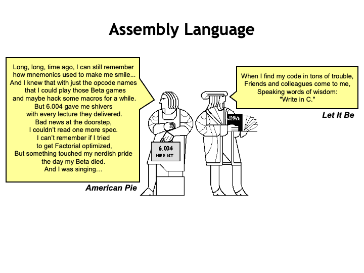
Review: Beta ISA
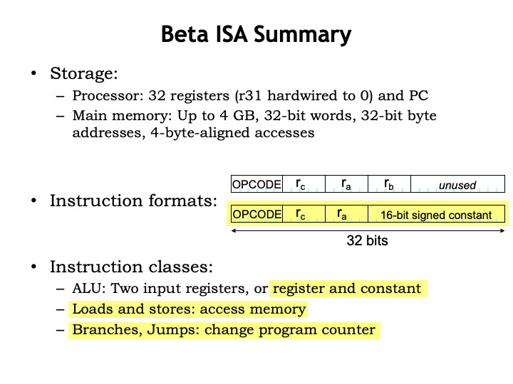
In the previous lecture, we developed the instruction set architecture for the Beta, the computer system weʼll be building throughout this part of the course. The Beta incorporates two types of storage or memory. In the CPU datapath there are 32 general-purpose registers, which can be read to supply source operands for the ALU or written with the ALU result. In the CPUʼs control logic there is a special-purpose register called the program counter, which contains the address of the memory location holding the next instruction to be executed.
The datapath and control logic are connected to a large main memory with a maximum capacity of $2^{32}$ bytes, organized as $2^{30}$ 32-bit words. This memory holds both data and instructions.
Beta instructions are 32-bit values comprised of various fields. The 6-bit OPCODE field specifies the operation to be performed. The 5-bit Ra, Rb, and Rc fields contain register numbers, specifying one of the 32 general-purpose registers. There are two instruction formats: one specifying an opcode and three registers, the other specifying an opcode, two registers, and a 16-bit signed constant.
There three classes of instructions. The ALU instructions perform an arithmetic or logic operation on two operands, producing a result that is stored in the destination register. The operands are either two values from the general-purpose registers, or one register value and a constant. The yellow highlighting indicates instructions that use the second instruction format.
The Load/Store instructions access main memory, either loading a value from main memory into a register, or storing a register value to main memory.
And, finally, there are branches and jumps whose execution may change the program counter and hence the address of the next instruction to be executed.
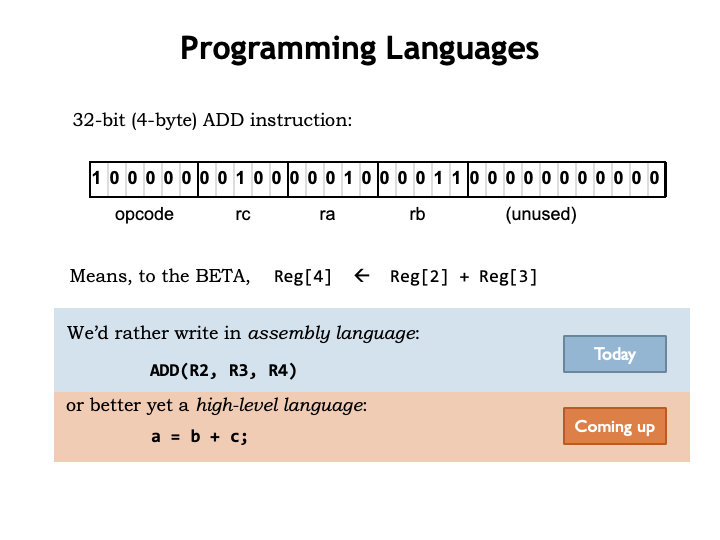
To program the Beta weʼll need to load main memory with binary-encoded instructions. Figuring out each encoding is clearly the job for a computer, so weʼll create a simple programming language that will let us specify the opcode and operands for each instruction. So instead of writing the binary at the top of slide, weʼll write assembly language statements to specify instructions in symbolic form. Of course we still have think about which registers to use for which values and write sequences of instructions for more complex operations.
By using a high-level language we can move up one more level abstraction and describe the computation we want in terms of variables and mathematical operations rather than registers and ALU functions.
In this lecture, weʼll describe the assembly language weʼll use for programming the Beta. And in the next lecture weʼll figure out how to translate high-level languages, such as C, into assembly language.
The layer cake of abstractions gets taller yet: we could write an interpreter for say, Python, in C and then write our application programs in Python. Nowadays, programmers often choose the programming language thatʼs most suitable for expressing their computations, then, after perhaps many layers of translation, come up with a sequence of instructions that the Beta can actually execute.
Assembly Language
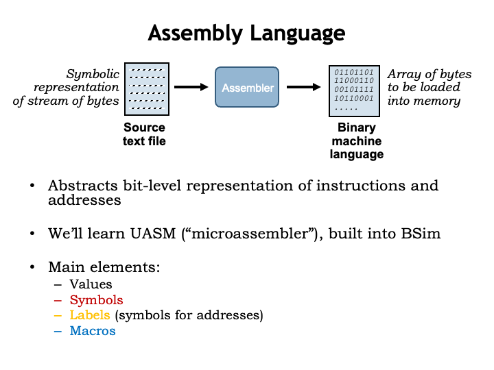
Okay, back to assembly language, which weʼll use to shield ourselves from the bit-level representations of instructions and from having to know the exact location of variables and instructions in memory. A program called the assembler reads a text file containing the assembly language program and produces an array of 32-bit words that can be used to initialize main memory.
Weʼll learn the UASM assembly language, which is built into BSim, our simulator for the Beta ISA. UASM is really just a fancy calculator! It reads arithmetic expressions and evaluates them to produce 8-bit values, which it then adds sequentially to the array of bytes which will eventually be loaded into the Betaʼs memory. UASM supports several useful language features that make it easier to write assembly language programs. Symbols and labels let us give names to particular values and addresses. And macros let us create shorthand notations for sequences of expressions that, when evaluated, will generate the binary representations for instructions and data.
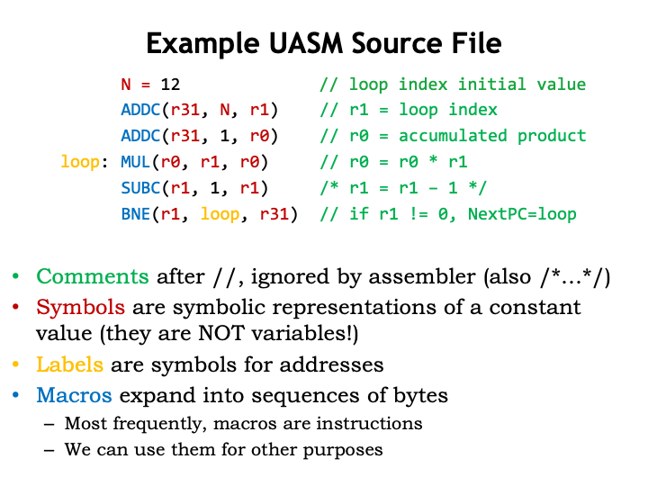
Hereʼs an example UASM source file. Typically we write one UASM statement on each line and can use spaces, tabs and newlines to make the source as readable as possible. Weʼve added some color coding to help in our explanation.
Comments (shown in green) allow us to add text annotations to the program. Good comments will help remind you how your program works. You really donʼt want to have figure out from scratch what a section of code does each time you need to modify or debug it! There are two ways to add comments to the code. “//” starts a comment, which then occupies the rest of the source line. Any characters after “//” are ignored by the assembler, which will start processing statements again at the start of the next line in the source file. You can also enclose comment text using the delimiters “/*” and “*/” and the assembler will ignore everything in-between. Using this second type of comment, you can comment-out many lines of code by placing “/*” at the start and, many lines later, end the comment section with “*/”.
Symbols (shown in red) are symbolic names for constant values. Symbols make the code easier to understand, e.g., we can use N as the name for an initial value for some computation, in this case the value 12. Subsequent statements can refer to this value using the symbol N instead of entering the value 12 directly. When reading the program, weʼll know that N means this particular initial value. So if later we want to change the initial value, we only have to change the definition of the symbol N rather than find all the 12ʼs in our program and change them. In fact some of the other appearances of 12 might not refer to this initial value and so to be sure we only changed the ones that did, weʼd have to read and understand the whole program to make sure we only edited the right 12ʼs. You can imagine how error-prone that might be! So using symbols is a practice you want to follow!
Note that all the register names are shown in red. Weʼll define the symbols R0 through R31 to have the values 0 through 31. Then weʼll use those symbols to help us understand which instruction operands are intended to be registers, e.g., by writing R1, and which operands are numeric values, e.g., by writing the number 1. We could just use numbers everywhere, but the code would be much harder to read and understand.
Labels (shown in yellow) are symbols whose value are the address of a particular location in the program. Here, the label “loop” will be our name for the location of the MUL instruction in memory. In the BNE at the end of the code, we use the label “loop” to specify the MUL instruction as the branch target. So if R1 is non-zero, we want to branch back to the MUL instruction and start another iteration.
Weʼll use indentation for most UASM statements to make it easy to spot the labels defined by the program. Indentation isnʼt required, itʼs just another habit assembly language programmers use to keep their programs readable.
We use macro invocations (shown in blue) when we want to write Beta instructions. When the assembler encounters a macro, it expands the macro, replacing it with a string of text provided by in the macroʼs definition. During expansion, the provided arguments are textually inserted into the expanded text at locations specified in the macro definition. Think of a macro as shorthand for a longer text string we could have typed in. Weʼll see how all this works in the next video segment.
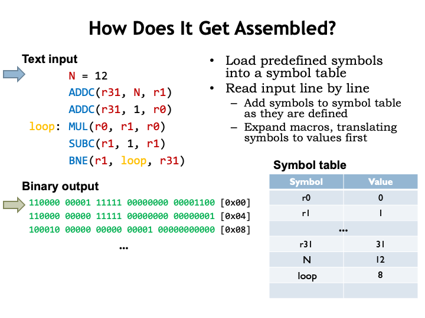
Letʼs follow along as the assembler processes our source file. The assembler maintains a symbol table that maps symbols names to their numeric values. Initially the symbol table is loaded with mappings for all the register symbols.
The assembler reads the source file line-by-line, defining symbols and labels, expanding macros, or evaluating expressions to generate bytes for the output array. Whenever the assembler encounters a use of a symbol or label, itʼs replaced by the corresponding numeric value found in the symbol table.
The first line, N = 12, defines the value of the symbol N to be 12, so the appropriate entry is made in the symbol table.
Advancing to the next line, the assembler encounters an invocation of the ADDC macro with the arguments “r31”, “N”, and “r1”. As weʼll see in a couple of slides, this triggers a series of nested macro expansions that eventually lead to generating a 32-bit binary value to be placed in memory location 0. The 32-bit value is formatted here to show the instruction fields and the destination address is shown in brackets.
The next instruction is processed in the same way, generating a second 32-bit word.
On the fourth line, the label loop is defined to have the value of the location in memory thatʼs about to filled (in this case, location 8). So the appropriate entry is made in the symbol table and the MUL macro is expanded into the 32-bit word to be placed in location 8.
The assembler processes the file line-by-line until it reaches the end of the file. Actually the assembler makes two passes through the file. On the first pass it loads the symbol table with the values from all the symbol and label definitions. Then, on the second pass, it generates the binary output. The two-pass approach allows a statement to refer to symbol or label that is defined later in the file, e.g., a forward branch instruction could refer to the label for an instruction later in the program.
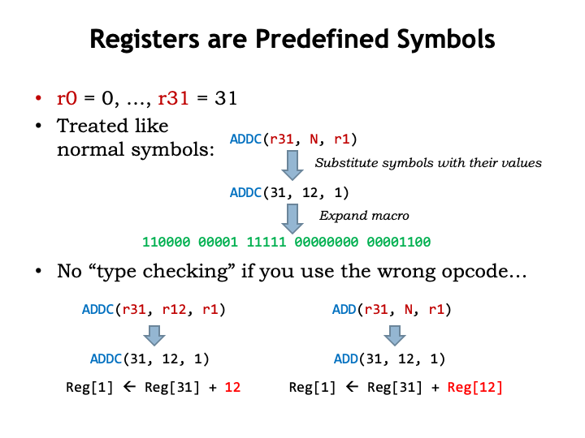
As we saw in the previous slide, thereʼs nothing magic about the register symbols — they are just symbolic names for the values 0 through 31. So when processing ADDC(r31,N,r1), UASM replaces the symbols with their values and actually expands ADDC(31,12,1).
UASM is very simple. It simply replaces symbols with their values, expands macros and evaluates expressions. So if you use a register symbol where a numeric value is expected, the value of the symbol is used as the numeric constant. Probably not what the programmer intended.
Similarly, if you use a symbol or expression where a register number is expected, the low-order 5 bits of the value is used as the register number, in this example, as the Rb register number. Again probably not what the programmer intended.
The moral of the story is that when writing UASM assembly language programs, you have to keep your wits about you and recognize that the interpretation of an operand is determined by the opcode macro, not by the way you wrote the operand.
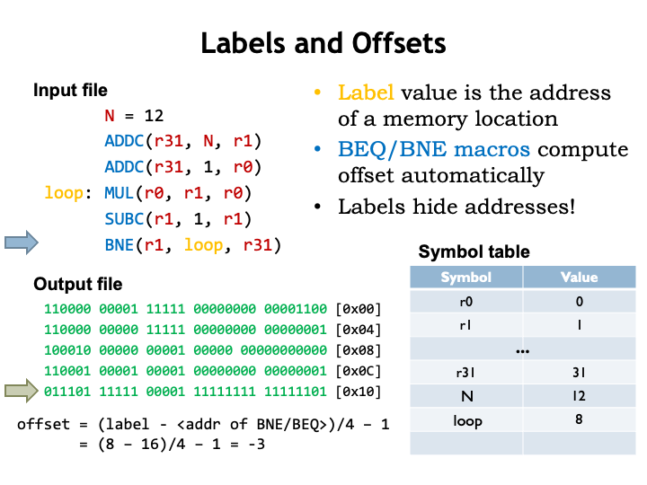
Recall from the previous lecture that branch instructions use the 16-bit constant field of the instruction to encode the address of the branch target as a word offset from the location of the branch instruction. Well, actually the offset is calculated from the instruction immediately following the branch, so an offset of -1 would refer to the branch itself.
The calculation of the offset is a bit tedious to do by hand and would, of course, change if we added or removed instructions between the branch instruction and branch target. Happily macros for the branch instructions incorporate the necessary formula to compute the offset from the address of the branch and the address of the branch target. So we just specify the address of the branch target, usually with a label, and let UASM do the heavy lifting.
Here we see that BNE branches backwards by three instructions (remember to count from the instruction following the branch) so the offset is -3. The 16-bit twoʼs complement representation of -3 is the value placed in the constant field of the BNE instruction.
Macros
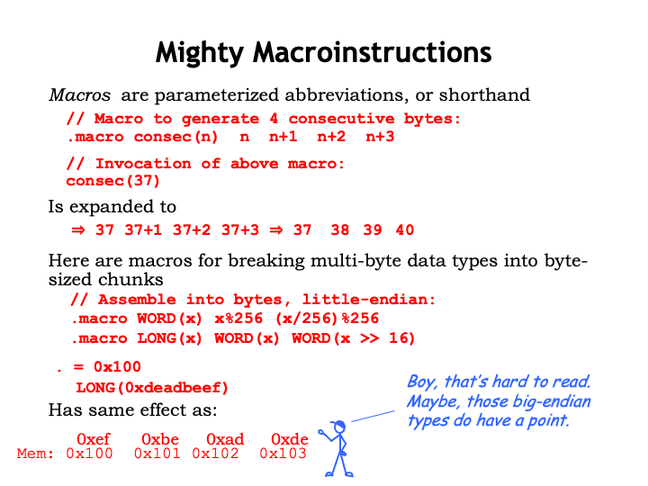
Letʼs take a closer look at how macros work in UASM. Here we see the definition of the macro “consec” which has a single parameter “n”. The body of the macro is a sequence of four expressions. When thereʼs an invocation of the “consec” macro, in this example with the argument 37, the body of the macro is expanded replacing all occurrences of “n” with the argument 37. The resulting text is then processed as if it had appeared in place of the macro invocation. In this example, the four expressions are evaluated to give a sequence of four values that will be placed in the next four bytes of the output array.
Macro expansions may contain other macro invocations, which themselves will be expanded, continuing until all thatʼs left are expressions to be evaluated. Here we see the macro definition for WORD, which assembles its argument into two consecutive bytes. And for the macro LONG, which assembles its argument into four consecutive bytes, using the WORD macro to process the low 16 bits of the value, then the high 16 bits of the value.
These two UASM statements cause the constant 0xDEADBEEF to converted to 4 bytes, which are deposited in the output array starting at index 0x100.
Note that the Beta expects the least-significant byte of a multi-byte value to be stored at the lowest byte address. So the least-significant byte 0xEF is placed at address 0x100 and the most-significant byte 0xDE is placed at address 0x103. This is the little-endian convention for multi-byte values: the least-significant byte comes first. Intelʼs x86 architecture is also little-endian.
There is a symmetrical big-endian convention where the most-significant byte comes first. Both conventions are in active use and, in fact, some ISAs can be configured to use either convention! Thereʼs no “right answer” for which convention to use, but the fact that there two conventions means that we have to be alert for the need to convert the representation of multi-byte values when moving values between one ISA and another, e.g., when we send a data file to another user.
As you can imagine there are strong advocates for both schemes who are happy to defend their point of view at great length. Given the heat of the discussion, itʼs appropriate that the names for the conventions were drawn from Jonathan Swiftʼs “Gulliverʼs Travels” in which a civil war is fought over whether to open a soft-boiled egg at its big end or its little end.
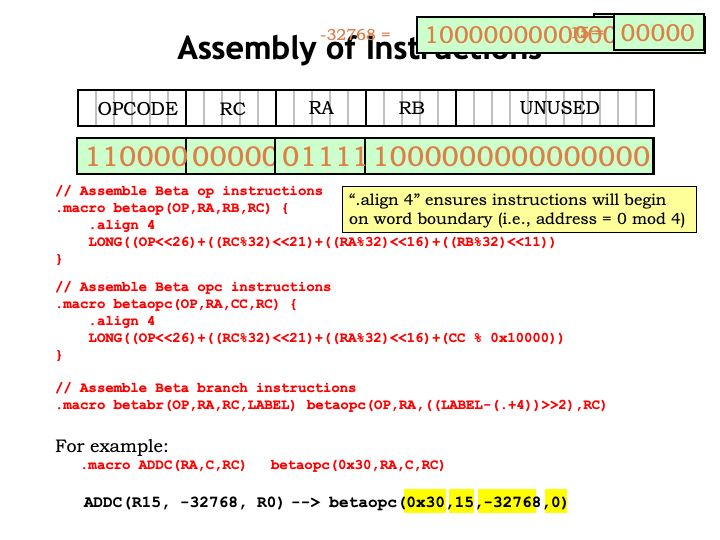
Letʼs look at the macros used to assemble Beta instructions. The BETAOP helper macro supports the 3-register instruction format, taking as arguments the values to be placed in the OPCODE, Ra, Rb, and Rc fields. The “.align 4” directive is a bit of administrative bookkeeping to ensure that instructions will have a byte address thatʼs a multiple of 4, i.e., that they span exactly one 32-bit word in memory. Thatʼs followed by an invocation of the LONG macro to generate the 4 bytes of binary data representing the value of the expression shown here. The expression is where the actual assembly of the fields takes place. Each field is limited to requisite number of bits using the modulo operator (%), then shifted left (<<) to the correct position in the 32-bit word.
And here are the helper macros for the instructions that use a 16-bit constant as the second operand.
Letʼs follow the assembly of an ADDC instruction to see how this works. The ADDC macro expands into an invocation of the BETAOPC helper macro, passing along the correct value for the ADDC opcode, along with the three operands.
The BETAOPC macro does the following arithmetic: The OP argument, in this case the value 0x30, is shifted left to occupy the high-order 6 bits of the instruction. Then the RA argument, in this case 15, is placed in its proper location. The 16-bit constant -32768 is positioned in the low 16 bits of the instruction. And, finally, the Rc argument, in this case 0, is positioned in the Rc field of the instruction.
You can see why we call this processing “assembling an instruction”. The binary representation of an instruction is assembled from the binary values for each of the instruction fields. Itʼs not a complicated process, but it requires a lot of shifting and masking, tasks that weʼre happy to let a computer handle.
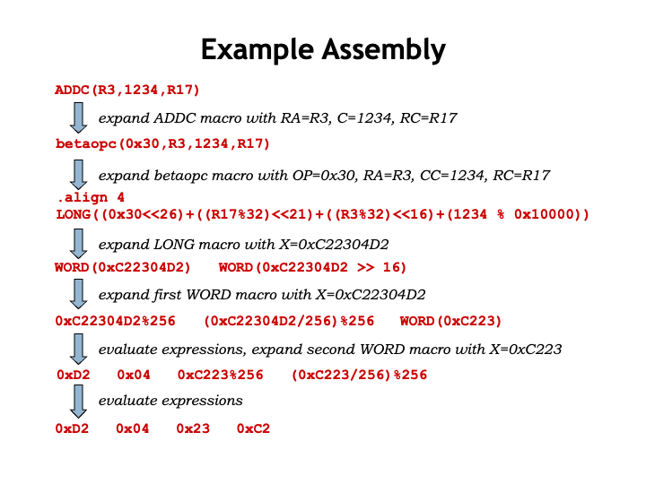
Hereʼs the entire sequence of macro expansions that assemble this ADDC instruction into an appropriate 32-bit binary value in main memory.
You can see that the knowledge of Beta instruction formats and opcode values is built into the bodies of the macro definitions. The UASM processing is actually quite general — with a different set of macro definitions it could process assembly language programs for almost any ISA!
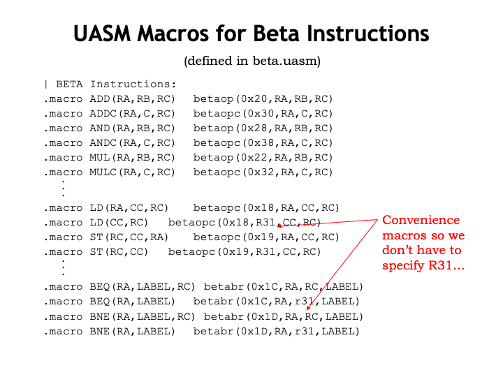
All the macro definitions for the Beta ISA are provided in the beta.uasm file, which is included in each of the assembly language lab assignments. Note that we include some convenience macros to define shorthand representations that provide common default values for certain operands. For example, except for procedure calls, we donʼt care about the PC+4 value saved in the destination register by branch instructions, so almost always would specify R31 as the Rc register, effectively discarding the PC+4 value saved by branches. So we define two-argument branch macros that automatically provide R31 as the destination register. Saves some typing, and, more importantly, it makes it easier to understand the assembly language program.
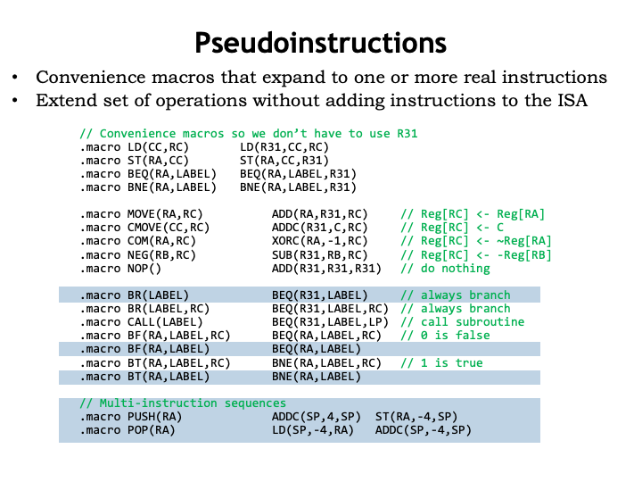
Here are a whole set of convenience macros intended to make programs more readable. For example, unconditional branches can be written using the BR() macro rather than the more cumbersome BEQ(R31,...). And itʼs more readable to use branch-false (BF) and branch-true (BT) macros when testing the results of a compare instruction.
And note the PUSH and POP macros at the bottom of page. These expand into multi-instruction sequences, in this case to add and remove values from a stack data structure pointed to by the SP register.
We call these macros pseudo instructions since they let us provide the programmer with what appears a larger instruction set, although underneath the covers weʼve just using the same small instruction repertoire developed in the lecture on “Instruction Set Architectures”.
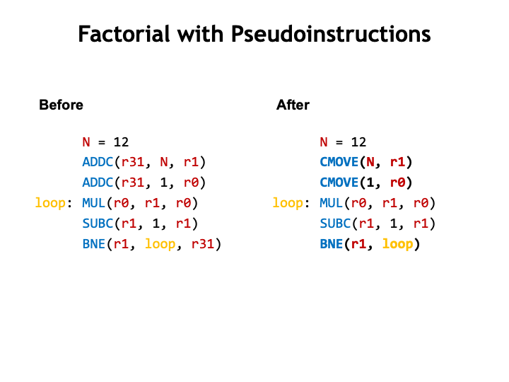
In this example weʼve rewritten the original code we had for the factorial computation using pseudo instructions. For example, CMOVE is a pseudo instruction for moving small constants into a register. Itʼs easier for us to read and understand the intent of a “constant move” operation than an “add a value to 0” operation provided by the ADDC expansion of CMOVE. Anything we can do to remove the cognitive clutter will be very beneficial in the long run.
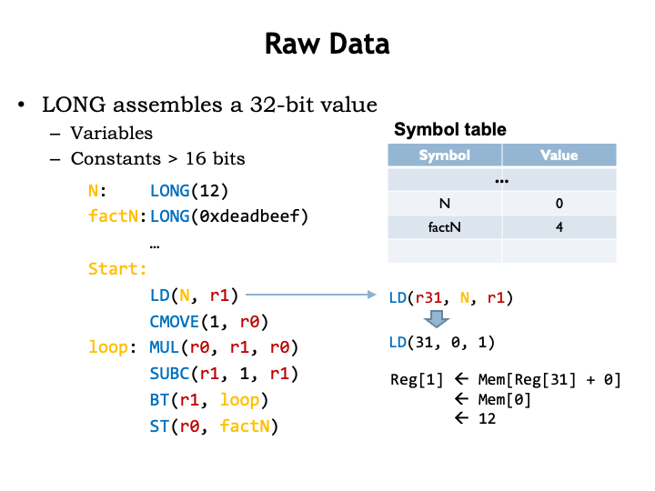
So far weʼve talked about assembling instructions. What about data? How do we allocate and initialize data storage and how do we get those values into registers so that they can be used as operands?
Here we see a program that allocates and initializes two memory locations using the LONG macro. Weʼve used labels to remember the addresses of these locations for later reference.
When the program is assembled the values of the label N and factN are 0 and 4 respectively, the addresses of the memory locations holding the two data values.
To access the first data value, the program uses a LD instruction, in this case one of convenience macros that supplies R31 as the default value of the Ra field. The assembler replaces the reference to the label N with its value 0 from the symbol table. When the LD is executed, it computes the memory address by adding the constant (0) to the value of the Ra register (which is R31 and hence the value is 0) to get the address (0) of the memory location from which to fetch the value to be placed in R1.
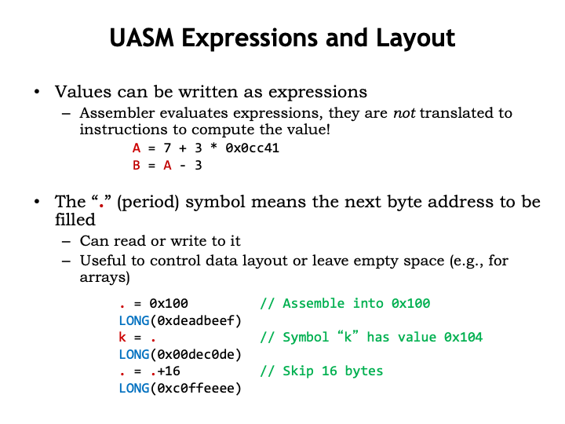
The constants needed as values for data words and instruction fields can be written as expressions. These expressions are evaluated by the assembler as it assembles the program and the resulting value is used as needed. Note that the expressions are evaluated at the time the assembler runs. By the time the program runs on the Beta, the resulting value is used. The assembler does NOT generate ADD and MUL instructions to compute the value during program execution. If a value is needed for an instruction field or initial data value, the assembler has to be able to perform the arithmetic itself. If you need the program to compute a value during execution, you have to write the necessary instructions as part of your program.
One last UASM feature: thereʼs a special symbol “.”, called “dot”, whose value is the address of the next main memory location to be filled by the assembler when it generates binary data. Initially “.” is 0 and itʼs incremented each time a new byte value is generated.
We can set the value of “.” to tell the assembler where in memory we wish to place a value. In this example, the constant 0xDEADBEEF is placed into location 0x100 of main memory. And we can use “.” in expressions to compute the values for other symbols, as shown here when defining the value for the symbol “k”. In fact, the label definition “k:” is exactly equivalent to the UASM statement “k = .”
We can even increment the value of “.” to skip over locations, e.g., if we wanted to leave space for an un initialized array.
Summary: Assembly Language
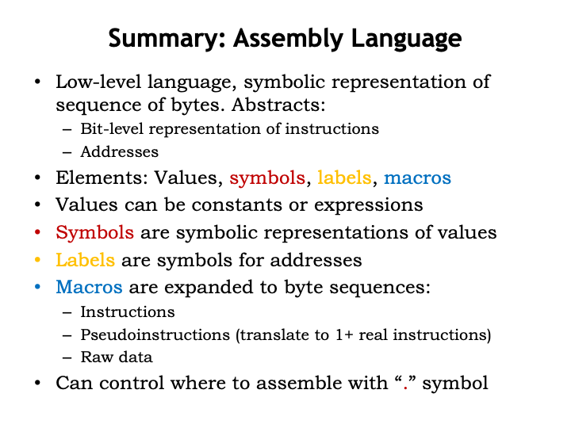
And thatʼs assembly language! We use assembly language as a convenient notation for generating the binary encoding for instructions and data. We let the assembler build the bit-level representations we need and to keep track of the addresses where these values are stored in main memory.
UASM itself provides support for values, symbols, labels and macros.
Values can be written as constants or expressions involving constants.
We use symbols to give meaningful names to values so that our programs will be more readable and more easily modified. Similarly, we use labels to give meaningful names to addresses in main memory and then use the labels in referring to data locations in LD or ST instructions, or to instruction locations in branch instructions.
Macros hide the details of how instructions are assembled from their component fields.
And we can use “.” to control where the assembler places values in main memory.
The assembler is itself a program that runs on our computer. That raises an interesting “chicken and egg problem”: how did the first assembler program get assembled into binary so it could run on a computer? Well, it was hand-assembled into binary. I suspect it processed a very simple language indeed, with the bells and whistles of symbols, labels, macros, expression evaluation, etc. added only after basic instructions could be assembled by the program. And Iʼm sure they were very careful not loose the binary so they wouldnʼt have to do the hand-assembly a second time!